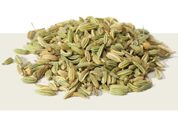

सौंफ प्रतिदिन घर में प्रयुक्त किए जाने वाले मसालों में से एक है। इसका नियमित उपयोग सेहत के लिए लाभदायक है।
* सौंफ और मिश्री समान भाग लेकर पीस लें। इसकी एक चम्मच मात्रा सुबह-शाम पानी के साथ दो माह तक लें। इससे आँखों की कमजोरी दूर होती है त
था नेत्र ज्योति में वृद्धि होती है।
* सौंफ का अर्क दस ग्राम शहद मिलाकर लें। खाँसी में तत्काल आराम मिलेगा।
* बेल का गूदा 10 ग्राम और 5 ग्राम सौंफ सुबह-शाम चबाकर खाने से अजीर्ण मिटता है और अतिसार में लाभ होता है।
* यदि आपको पेटदर्द होता है, तो भुनी हुई सौंफ चबाइए, तुरंत आराम मिलेगा। सौंफ की ठंडाई बनाकर पीजिए, इससे गर्मी शांत होगी और जी मिचलाना बंद हो जाएगा।
* हाथ-पाँव में जलन की शिकायत होने पर सौंफ के साथ बराबर मात्रा में धनिया कूट-छानकर मिश्री मिलाकर खाना खाने के पश्चात 5-6 ग्राम मात्रा में लेने से कुछ ही दिनों में आराम हो जाता है।
* सौंफ रक्त को साफ करने वाली एवं चर्मरोग नाशक है।